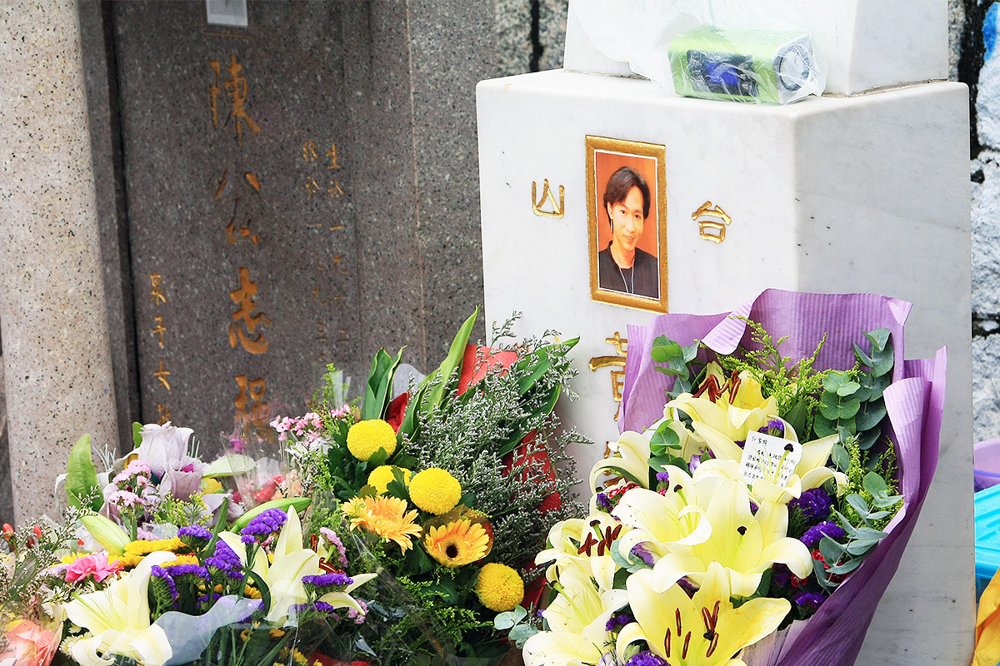
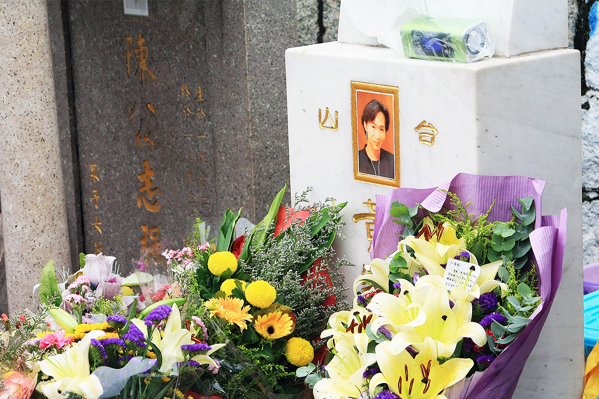
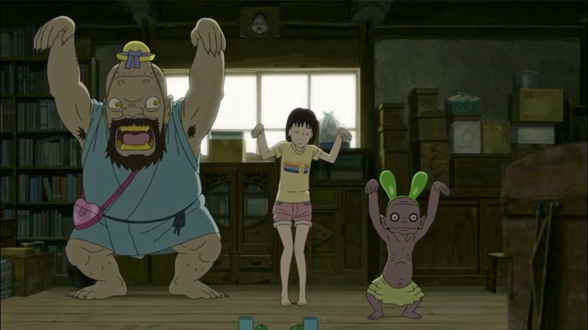

终于第一次去了香港,和我们去其他城市一样,基本都是在暴走,希望在不断的行走中撞见最真实的城市风景。短短几天的行程让我们只能在市区走走看看，没时间去更多更远的地方，印象最深的就是香港的街景了。一开始我们本来是打算按图索骥的寻找港片中的场景，来了以后才发现，这里每一处街景都是电影场景。坡道，转角，路牌，商牌，叮叮车，香港式过马路的人群，人手一张马经报的茶餐厅，聚在僻静角落抽烟的港男港女，到处都是浓浓的港片味道。只可惜假期太短，时间太仓促，香港还有许多地方没去，只能留到下次了 。背景音乐：《文雀》原声、《Hong Kong》－Gorillaz、《香港》－邓丽君 [embed]http://www.coletree.com/radio/coletree\_radio\_057.mp3\[/embed\]
自来猫
 躺在天猫箱子里的猫 6月初的一个早上，家里来了一位不速之客，一只瘦瘦的小猫。猫是坐电梯上来的，我们住在16层。那天电梯门一开，一只小猫跑了出来，蹿到走廊里，对着邻居家的门一直叫。一开始以为是邻居家的猫，后来看邻居一直没开门，又听它叫得可怜，我就把门开开了，它望了望我，我一喊它，它就跑过来，跟着我进了屋。 小猫看着很可怜的样子，很瘦，一直叫着，看起来像流浪猫，但黑白相间的毛还算干净。碾碎了半根火腿肠，放到盘子里，递到它跟前，看它安静的吃起来，一定是饿坏了。吃完半根火腿肠，小猫又开始叫。一开始我以为它还没吃饱，放进剩下的半根火腿肠，它闻了闻没吃，继续叫。于是没理它，过了一会发现它跑去厕所闻地上的水，才反应过来，它大概是渴了。于是又装了一盘水放到阳台上，召唤它来吃，果然小猫跑过来一口一口的舔起来。吃饱喝足之后，它先是跟着我在屋里到处转了转，大概是想熟悉熟悉环境，然后趴在卧室门口的垫子上打起盹来。这个垫子是家里所有地垫中毛毛最长，最软的，这个位置还能吹到风扇，实在是太会选了。看它一开始眯着眼，还四肢并拢规规矩矩的趴着，过一会就形象全无的四脚乱放了。
躺在天猫箱子里的猫 6月初的一个早上，家里来了一位不速之客，一只瘦瘦的小猫。猫是坐电梯上来的，我们住在16层。那天电梯门一开，一只小猫跑了出来，蹿到走廊里，对着邻居家的门一直叫。一开始以为是邻居家的猫，后来看邻居一直没开门，又听它叫得可怜，我就把门开开了，它望了望我，我一喊它，它就跑过来，跟着我进了屋。 小猫看着很可怜的样子，很瘦，一直叫着，看起来像流浪猫，但黑白相间的毛还算干净。碾碎了半根火腿肠，放到盘子里，递到它跟前，看它安静的吃起来，一定是饿坏了。吃完半根火腿肠，小猫又开始叫。一开始我以为它还没吃饱，放进剩下的半根火腿肠，它闻了闻没吃，继续叫。于是没理它，过了一会发现它跑去厕所闻地上的水，才反应过来，它大概是渴了。于是又装了一盘水放到阳台上，召唤它来吃，果然小猫跑过来一口一口的舔起来。吃饱喝足之后，它先是跟着我在屋里到处转了转，大概是想熟悉熟悉环境，然后趴在卧室门口的垫子上打起盹来。这个垫子是家里所有地垫中毛毛最长，最软的，这个位置还能吹到风扇，实在是太会选了。看它一开始眯着眼，还四肢并拢规规矩矩的趴着，过一会就形象全无的四脚乱放了。  一开始还睡得很规矩 看着小猫可爱的样子，很想收留它，但又怕自己搞不定，以前还从来没有自己养过猫，也就小的时候奶奶家有过一只很凶的老猫，还曾经抓破了妈妈的脸。上网查了查最近的宠物医院，在两站外，但网上全是差评。如果要收留它的话，意味着要先带它去宠物医院看看，然后买猫砂和猫粮。坦白讲，这方面我一点经验都没有。而且如果现在收留它，过几天又要出门旅游好几天，没人看着不行吧。一旦收留它，我想也不能中途放弃什么的，如果将来要怀孕，是不是会有影响？啊，我是不是想太多了。看着小猫安静的睡在一旁，我真有点不舍得放它出去。但回头一想，也许放它走才是最好的呢？猫是爱自由的动物，而我只在它需要的时候能够提供给它吃的和短暂的栖息地就好了。那种因为喜欢就据为己有的想法是不是有些自私呢？人可以想很多表达很多，但你却无法知道猫真正在想什么，想要什么。也许它想要的不过就是一餐饱饭一顿饱觉而已。
一开始还睡得很规矩 看着小猫可爱的样子，很想收留它，但又怕自己搞不定，以前还从来没有自己养过猫，也就小的时候奶奶家有过一只很凶的老猫，还曾经抓破了妈妈的脸。上网查了查最近的宠物医院，在两站外，但网上全是差评。如果要收留它的话，意味着要先带它去宠物医院看看，然后买猫砂和猫粮。坦白讲，这方面我一点经验都没有。而且如果现在收留它，过几天又要出门旅游好几天，没人看着不行吧。一旦收留它，我想也不能中途放弃什么的，如果将来要怀孕，是不是会有影响？啊，我是不是想太多了。看着小猫安静的睡在一旁，我真有点不舍得放它出去。但回头一想，也许放它走才是最好的呢？猫是爱自由的动物，而我只在它需要的时候能够提供给它吃的和短暂的栖息地就好了。那种因为喜欢就据为己有的想法是不是有些自私呢？人可以想很多表达很多，但你却无法知道猫真正在想什么，想要什么。也许它想要的不过就是一餐饱饭一顿饱觉而已。  拍下它的睡姿，也算是留作将来的纪念。拍照的时候，它显然是敏感的听到了快门的声音，但眼睛只是眯了眯，又睡过去了。大概它已经确定在这里不会存在危险了。能够给它提供一点暂时的安全感，我心里突然也有了小小感动的安慰。 后来，猫醒了，开始活跃起来，先是跳到电脑桌下的盒子上，我赶走它，它又跳到茶几上，又赶走它，它趴在茶几前的地毯上看着我。我想它也许需要一只盒子，于是找来前些日子天猫超市的快递箱子，开口侧着放在阳台的一角，我指着箱子，唤着小猫，告诉它这才是你的地盘。没想到小猫居然好像听懂了我的话，朝天猫箱子走过来，然后就这么钻进去了，完全没费我什么功夫。实在是太听话了，一瞬间我差点又想留下它。 就这样小猫安静的趴在天猫箱子里一下午，雨终于停了，我想下去问问门口保安，是不是有谁家丢了猫，心里想着一会带它出去，如果回来的时候它还跟着我，那我就留下它吧。锁门的时候，小猫蹲在防盗门和里门之间对着里面叫了几声。我不知道它是不是还有些留恋。进电梯的时候，我只是一招手，它就跟着我进来了。出了楼门，小猫一下兴奋起来，从这个水坑跑到另一个水坑，我想至少这个时候，它是自由的。问保安，保安说这只猫在这附近已经两三天了，一点不怕人，有人进楼门，就跟着进去了。昨天倒是有个女孩贴寻猫启示，不过是一只白色的大肥猫，没找到还一直哭。我想象着如果那个女孩捡到这只小猫会不会心生一点安慰。 回去的时候，小猫不见了，进了楼门，才发现它又躲到了电梯门口。我看着它，可惜它看上去已经不认识我了。对面的电梯到了，门一开，蹦出来一条狗，狗看见对面的猫，一下扑上去汪汪叫个不停，猫很无语的侧着头，没理它。就这样，我上了对面的电梯，那只小猫没有再跟过来。一个人吃完晚饭，心里还惦记着那只小猫。于是又下去了一趟，想着如果找到它，就再带它回来，至少让它待上一晚。结果找遍了整个院子，也没有小猫的踪影。再后来，也再没有见到过它。
拍下它的睡姿，也算是留作将来的纪念。拍照的时候，它显然是敏感的听到了快门的声音，但眼睛只是眯了眯，又睡过去了。大概它已经确定在这里不会存在危险了。能够给它提供一点暂时的安全感，我心里突然也有了小小感动的安慰。 后来，猫醒了，开始活跃起来，先是跳到电脑桌下的盒子上，我赶走它，它又跳到茶几上，又赶走它，它趴在茶几前的地毯上看着我。我想它也许需要一只盒子，于是找来前些日子天猫超市的快递箱子，开口侧着放在阳台的一角，我指着箱子，唤着小猫，告诉它这才是你的地盘。没想到小猫居然好像听懂了我的话，朝天猫箱子走过来，然后就这么钻进去了，完全没费我什么功夫。实在是太听话了，一瞬间我差点又想留下它。 就这样小猫安静的趴在天猫箱子里一下午，雨终于停了，我想下去问问门口保安，是不是有谁家丢了猫，心里想着一会带它出去，如果回来的时候它还跟着我，那我就留下它吧。锁门的时候，小猫蹲在防盗门和里门之间对着里面叫了几声。我不知道它是不是还有些留恋。进电梯的时候，我只是一招手，它就跟着我进来了。出了楼门，小猫一下兴奋起来，从这个水坑跑到另一个水坑，我想至少这个时候，它是自由的。问保安，保安说这只猫在这附近已经两三天了，一点不怕人，有人进楼门，就跟着进去了。昨天倒是有个女孩贴寻猫启示，不过是一只白色的大肥猫，没找到还一直哭。我想象着如果那个女孩捡到这只小猫会不会心生一点安慰。 回去的时候，小猫不见了，进了楼门，才发现它又躲到了电梯门口。我看着它，可惜它看上去已经不认识我了。对面的电梯到了，门一开，蹦出来一条狗，狗看见对面的猫，一下扑上去汪汪叫个不停，猫很无语的侧着头，没理它。就这样，我上了对面的电梯，那只小猫没有再跟过来。一个人吃完晚饭，心里还惦记着那只小猫。于是又下去了一趟，想着如果找到它，就再带它回来，至少让它待上一晚。结果找遍了整个院子，也没有小猫的踪影。再后来，也再没有见到过它。
离开20年后的第一次相见
今年是黄家驹离世20年，也是Beyond成立30周年。对我们来说最实际的是：6月10号端午小长假，我们终于有机会去趟香港。然而那一天恰好是家驹生日，这种巧合让我觉得那天是必须要去家驹墓地了。毕竟这对我来说，是离开这个世界之前必须做的事之一。 墓地其实不难找，只是远了一点。我们从油塘地铁站出来，走到高超道与卫奕信径交界处，选了一个爬山的捷径上墓地。没想到久不经练的两人爬起山来很吃力，天还下起雨，山上沿路巨毒的蚊子不断地叮着我们小腿，走到半山树林中还发出不知什么生物造成的声响动静，我们只好一鼓作气爬到山顶。从树林里出来时基本雨过天晴，眼前豁然开朗，看到以下景象，至于家驹的墓地在哪？也明显得不用找了。  后来得知当天来祭奠的人还是很多，我们到达时是中午，人还算少的。有人在墓碑上放了个MP3播放器，一直在放早期的Beyond作品；墓碑底下摆满了啤酒，可乐，香烟，鲜花，卡片…等等。我们待的一个小时里，不断地有人从山路上来，几乎所有的都是来看家驹的。过了一段时间，有人弹起吉他，让大家合唱。每个素不相识的人倒也很自然地一起唱起来。旁边那位兄弟丝毫不掩盖自己走调的腔，越唱越大声。
后来得知当天来祭奠的人还是很多，我们到达时是中午，人还算少的。有人在墓碑上放了个MP3播放器，一直在放早期的Beyond作品；墓碑底下摆满了啤酒，可乐，香烟，鲜花，卡片…等等。我们待的一个小时里，不断地有人从山路上来，几乎所有的都是来看家驹的。过了一段时间，有人弹起吉他，让大家合唱。每个素不相识的人倒也很自然地一起唱起来。旁边那位兄弟丝毫不掩盖自己走调的腔，越唱越大声。  终于看到墓碑上家驹的照片，正值青春的模样，走得早便永远年轻。墓碑前雕塑了一本书，上面写着：生命不在乎得到什么，只在乎做过什么。摇摆精神，永垂不朽。二十年过后，依然这么多人长途跋涉过来缅怀，我想他的确是做到了。  墓地靠山望海，环境很好。当我们站在那看着对面，真的感觉海阔天空，远方的景色也看得那么清晰。想起中学面对各种烦恼困境时，有他的音乐陪伴，也同样让前路明朗了些。今天我们从远方来到这，终算圆了自己二十年的心愿。
终于看到墓碑上家驹的照片，正值青春的模样，走得早便永远年轻。墓碑前雕塑了一本书，上面写着：生命不在乎得到什么，只在乎做过什么。摇摆精神，永垂不朽。二十年过后，依然这么多人长途跋涉过来缅怀，我想他的确是做到了。  墓地靠山望海，环境很好。当我们站在那看着对面，真的感觉海阔天空，远方的景色也看得那么清晰。想起中学面对各种烦恼困境时，有他的音乐陪伴，也同样让前路明朗了些。今天我们从远方来到这，终算圆了自己二十年的心愿。 
夏天就该像这样
早已经过了偏爱治愈系动漫的年纪，过了容易被温情故事搞得流眼泪的年纪。但《给桃子的信》还是不由自主有点泪光闪闪。日本动漫里的夏天总是美好的，像早年的《菊次郎的夏天》，不知迷倒多少人。《给桃子的信》这部片里面，阳光，小岛，田野，海滩，这些夏日元素其实都还只是陪衬，主角是让人意料之外的妖怪。 之前完全没看介绍，所以起初妖怪刚刚出现在安静无人的小岛街巷时，还有点点小吓人，后来看到妖怪傻乎乎的表现才确信这不是一部恐怖片。当然，不可能是一部恐怖片。 原来妖怪是天上的爸爸派来照看桃子的，通过特殊的法事舞蹈把桃子的消息传给天上的爸爸。  影片的高潮是台风中桃子妈妈急性哮喘发作，几个守卫妖怪召唤了岛上所有的妖怪帮桃子搭起了一座抵挡狂风暴雨的快车，让她能离开小岛去寻求帮助。这个场景是在向《龙猫》里的猫巴士致敬吧。  看完电影，真想去找个安静的小岛生活一辈子。可惜现实是即便有这样的小岛，也会面临《南方大作战》那样的强迫征用，然后就是强拆吧。于是只寄希望于这个夏天除了阳光海滩，蓝天白云，还能多来几场暴风雨。
看完电影，真想去找个安静的小岛生活一辈子。可惜现实是即便有这样的小岛，也会面临《南方大作战》那样的强迫征用，然后就是强拆吧。于是只寄希望于这个夏天除了阳光海滩，蓝天白云，还能多来几场暴风雨。 
{kind=link}
{kind=link}
那时候我们还年轻
拒绝遗忘，是每日的功夫。之后，我们更应该反省纪念本身的意义是什么？汶川地震5周年之际又有雅安，灾难不断，悼念就不息。电视台的纪念晚会，网络上点起的蜡烛，还有逢灾必喊的“加油”声…都象一种虚无的精神鸦片，让人们流泪过后，又能继续上班下班，继续以往的生活，于是什么都没改变。二十多年前人民诉求的反腐败，只因当年有些官员利用职权倒卖商品，谁能想到如今的腐败比以前更厉害千万倍？20年已经不算短，社会是进步了还是倒退了呢？拒绝遗忘历史上的今天，当更应思考如何不让历史重蹈覆辙。 [embed]http://www.coletree.com/radio/coletree\_radio\_056.mp3\[/embed\]
五月雨和Sophie Zelmani
五月即将过去，广州的五月最高温已经攀上30度，但因为有雨和Sophie Zelmani，也变得清新凉爽起来。Sophie Zelmani有首歌叫《You Can Always Long For May》，在她来广州演出之前，我也一直期盼着这个五月的到来。感谢网友@代号林盼 提供现场照片。 [embed]http://www.coletree.com/radio/coletree\_radio\_055.mp3\[/embed\]
刀的迷墙
 一个人在家看完《刀的哲学》，一部俄罗斯恐怖片。百科上写是由俄罗斯著名超现实主义导演AndreyIskanov拍摄，讲述日本侵华战争时期，日本731部队在中国犯下的滔天罪行。 好吧，我完全没看出是讲日本731的，到最后我也一直以为是纳粹集中营的事。因为里面被残害的都是外国人，并没有中国人，而且我是跳着看的。但即使是跳着看，还是能被黑白画面传递出恐怖影像所感染，压抑的情绪像毛毛虫一样爬遍全身。一开始我还以为是一部疯狂的纪录片，直到看到超现实主义这几个字才感觉谢天谢地，心里稍稍有所安慰。 解剖孕妇，射线照射，拔牙试验，毒气试验，制作骨骼标本，头部细菌侵蚀试验，体内埋置生物实验，这还只是上集的内容。每一个试验都细致入微，配上粗颗粒黑白画质和演员或神经质或木讷的面部表情，很容易以假乱真。加上黑白片中黑色压抑到极致，白色形成虚无苍白无力的光晃荡其间，看久了绝对会有催眠暗示的效果。 所以我只能跳着看，即使如此，每一次跳动后不断出现的画帧也足够阴郁和邪恶。隔着一道迷墙，看不清却也够真切。人就是这样，又害怕又要看，快速过完，赶紧删掉，像是留下它就是留下通往罪恶的后门一样，要“刷”的一声清除干净。 除了猎奇，还有什么理由去看这样的片？实在想不出，大概像我这样觉得自己看过很多恐怖片都不会感觉害怕的，总想着挑战下极限。只是挑战来又如何，刺激下神经，大呼过瘾，又如何？害怕和恐惧还不是一回事，害怕是当下，恐惧则更深藏在潜意识中，大概不知不觉你的梦境里也会开始潜入一些邪恶的东西。而且我发现越长大，越胆小，很多以前不怕的，只是以为电影都是假的，心里谨记这句话，貌似也有所帮助，但大了来发现电影还真不是那么假，很多事都可能发生都在发生，生活中发生的事已经足够让你有或明或暗的恐惧，还需要电影来加剧吗？ 呼，还是少看的好。或者看点商业恐怖片就够了，像这种实验级别的还是算了。
一个人在家看完《刀的哲学》，一部俄罗斯恐怖片。百科上写是由俄罗斯著名超现实主义导演AndreyIskanov拍摄，讲述日本侵华战争时期，日本731部队在中国犯下的滔天罪行。 好吧，我完全没看出是讲日本731的，到最后我也一直以为是纳粹集中营的事。因为里面被残害的都是外国人，并没有中国人，而且我是跳着看的。但即使是跳着看，还是能被黑白画面传递出恐怖影像所感染，压抑的情绪像毛毛虫一样爬遍全身。一开始我还以为是一部疯狂的纪录片，直到看到超现实主义这几个字才感觉谢天谢地，心里稍稍有所安慰。 解剖孕妇，射线照射，拔牙试验，毒气试验，制作骨骼标本，头部细菌侵蚀试验，体内埋置生物实验，这还只是上集的内容。每一个试验都细致入微，配上粗颗粒黑白画质和演员或神经质或木讷的面部表情，很容易以假乱真。加上黑白片中黑色压抑到极致，白色形成虚无苍白无力的光晃荡其间，看久了绝对会有催眠暗示的效果。 所以我只能跳着看，即使如此，每一次跳动后不断出现的画帧也足够阴郁和邪恶。隔着一道迷墙，看不清却也够真切。人就是这样，又害怕又要看，快速过完，赶紧删掉，像是留下它就是留下通往罪恶的后门一样，要“刷”的一声清除干净。 除了猎奇，还有什么理由去看这样的片？实在想不出，大概像我这样觉得自己看过很多恐怖片都不会感觉害怕的，总想着挑战下极限。只是挑战来又如何，刺激下神经，大呼过瘾，又如何？害怕和恐惧还不是一回事，害怕是当下，恐惧则更深藏在潜意识中，大概不知不觉你的梦境里也会开始潜入一些邪恶的东西。而且我发现越长大，越胆小，很多以前不怕的，只是以为电影都是假的，心里谨记这句话，貌似也有所帮助，但大了来发现电影还真不是那么假，很多事都可能发生都在发生，生活中发生的事已经足够让你有或明或暗的恐惧，还需要电影来加剧吗？ 呼，还是少看的好。或者看点商业恐怖片就够了，像这种实验级别的还是算了。
溪云乍起，山雨欲来
自从来到南方，这边隔三差五都在下雨，也因此一直想做一期全部关于雨的电台。广州的雨常常是说来就来，来势汹涌，这种时候我常常躲在窗户背后，看窗外乌云压过来，天完全黑下来，接着就是大颗的雨珠拍在窗上，然后很快变成瀑布般的水流倾泻下来。五月的雨已经如此猛烈，到台风季节的时候又会是怎样呢？心里倒是很期待，长这么大还没见过台风，而且我又是这么喜欢酣畅淋漓的暴雨。 [embed]http://www.coletree.com/radio/coletree\_radio\_054.mp3\[/embed\]
没有鸡肉的钵钵鸡
每天可以自己做饭吃是幸福的。我发现自己还挺喜欢做菜的，以前在北京偶尔做做还不觉得，以为是偶尔为之的新鲜感，但现在日复一日倒也没觉得辛苦，只觉得乐在其中，天天想着变着花样做。在做了一段时间清淡饮食后，终于忍不住怀念起乐山的钵钵鸡来。一开始总觉得这个做起来对我而言有点难度，到网上一搜发现还挺容易。于是一直琢磨着找天配齐材料自己在家做。可惜禽流感了，不敢买鸡，只买了两三样素菜，想着钵钵鸡里面不也有很多素菜嘛。 为了做这个私房菜钵钵鸡，特意准备好辣椒油和花椒油，今天又去把还缺的一味——醋买回来。配上生抽，盐，鸡精，糖，葱姜蒜末，高汤，于是就有了这道没有鸡肉也没有串串只有素的钵钵鸡。辣度是够了，咸度还不够，还是没有乐山钵钵鸡那样香。想想问题大概出在辣椒油上，瓶装的辣椒油肯定不如现做的香。据说讲究的川菜馆在制作辣椒油时，会将七星椒、二荆条辣椒、小米椒三种辣椒按照4∶4∶2的比例来调配，取二荆条辣椒的香味和色泽，七星椒的辣味，小米辣的辛烈，做出色、香、味俱全的完美辣椒油。嗯，有机会再试试。
致我们终将逝去的青春
 难得有个没事的周末，两人在家把电脑上存放的《致我们终将逝去的青春》看了，发现又是一部投大众所好的取巧之作。里面引用的一句泰戈尔的诗：“天空没有翅膀的痕迹，但鸟儿已经飞过”，倒挺能慰籍我的平凡人生的。 看完电影没忘打开电视，当晚是弗格森在曼联的最后一场主场比赛，是他的退休告别仪式。从我小时开始看球起，弗sir就已经在曼联执教。到我高中，大学，毕业工作…任凭别的球队教练来来去去，他依然还在。虽然这么多年，我看球时多时少，不管怎样，看曼联都能见到他，他就像英超的一个象征，总在那里。 慢慢地，我都忘了他已71岁，忘了他也会退休，也会有一天不在了。所以当得知弗sir退休，还是很意外离别会来得那么突然。在我们还为生活奔波忙碌之时，很多朋友，很多东西都开始离去。对弗sir退休的感伤，何曾不是对逝去青春的感伤。感谢弗sir，并致我们终将逝去的青春。 PS: 那句泰戈尔的诗，我看电影时，已想不起来它竟然是我大学时抄过的。
难得有个没事的周末，两人在家把电脑上存放的《致我们终将逝去的青春》看了，发现又是一部投大众所好的取巧之作。里面引用的一句泰戈尔的诗：“天空没有翅膀的痕迹，但鸟儿已经飞过”，倒挺能慰籍我的平凡人生的。 看完电影没忘打开电视，当晚是弗格森在曼联的最后一场主场比赛，是他的退休告别仪式。从我小时开始看球起，弗sir就已经在曼联执教。到我高中，大学，毕业工作…任凭别的球队教练来来去去，他依然还在。虽然这么多年，我看球时多时少，不管怎样，看曼联都能见到他，他就像英超的一个象征，总在那里。 慢慢地，我都忘了他已71岁，忘了他也会退休，也会有一天不在了。所以当得知弗sir退休，还是很意外离别会来得那么突然。在我们还为生活奔波忙碌之时，很多朋友，很多东西都开始离去。对弗sir退休的感伤，何曾不是对逝去青春的感伤。感谢弗sir，并致我们终将逝去的青春。 PS: 那句泰戈尔的诗，我看电影时，已想不起来它竟然是我大学时抄过的。